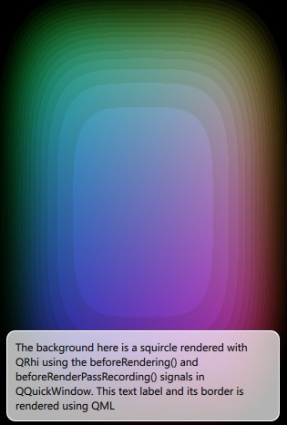

Scene Graph - RHI Under QML
Shows how to render directly with QRhi under a Qt Quick scene.

Introduction
The RHI Under QML example shows how an application can make use of the QQuickWindow::beforeRendering() and QQuickWindow::beforeRenderPassRecording() signals to draw custom QRhi-based content under a Qt Quick scene.
Applications that wish to render QRhi content on top of the Qt Quick scene, can do so by connecting to the QQuickWindow::afterRendering() and QQuickWindow::afterRenderPassRecording() signals.
In this example, we will also see how it is possible to have values that are exposed to QML which affect the QRhi-based rendering. We animate the threshold value using a NumberAnimation in the QML file and this float value is then passed on in a uniform buffer to the fragment shader.
The example is equivalent in most ways to the OpenGL Under QML, Direct3D 11 Under QML, Metal Under QML, and Vulkan Under QML examples. Those examples render the same content by directly using a 3D API. This example on the other hand is fully cross-platform and portable, as it inherently supports operating with all the 3D APIs supported by QRhi (such as, OpenGL, Vulkan, Metal, Direct 3D 11 and 12).
Note: This example demonstrates advanced, low-level functionality performing portable, cross-platform 3D rendering, while relying on APIs with limited compatibility guarantee from the Qt Gui module. To be able to use the QRhi APIs, the application links to Qt::GuiPrivate and includes <rhi/qrhi.h>.
Adding custom rendering as an underlay/overlay is one of the three ways to integrate custom 2D/3D rendering into a Qt Quick scene. The other two options are to perform the rendering "inline" with the Qt Quick scene's own rendering using QSGRenderNode, or to generate a whole separate render pass targeting a dedicated render target (a texture) and then have an item in the scene display the texture. Refer to the Scene Graph - RHI Texture Item and the Scene Graph - Custom QSGRenderNode examples regarding those approaches.
Core Concepts
The beforeRendering() signal is emitted at the start of every frame, before the scene graph starts its rendering, thus any QRhi draw calls that are made as a response to this signal, will stack under the Qt Quick items. However, there are two signals that are relevant here: the application's own QRhi commands should be recorded onto the same command buffer that is used by the scene graph, and what's more, the commands should belong to the same render pass. beforeRendering() on its own is not sufficient for this because it gets emitted at the start of the frame, before starting to record a render pass via QRhiCommandBuffer::beginPass(). By also connecting to beforeRenderPassRecording(), the application's own commands and the scene graph's own rendering will end up in the right order:
- The scene graph's render loop calls QRhi::beginFrame()
- QQuickWindow::beforeRendering() is emitted - the application prepares resources for its custom rendering
- The scene graph calls QRhiCommandBuffer::beginPass()
- QQuickWindow::beforeRenderPassRecording() is emitted - the application records draw calls
- The scene graph records draw calls
Walkthrough
The custom rendering is encapsulated within a custom QQuickItem. RhiSquircle derives from QQuickItem, and is exposed to QML (note the QML_ELEMENT). The QML scene instantiates RhiSquircle. Note however that this is not a visual item: the QQuickItem::ItemHasContents flag is not set. Thus the item's position and size has no relevance and it does not reimplement updatePaintNode().
class RhiSquircle : public QQuickItem { Q_OBJECT Q_PROPERTY(qreal t READ t WRITE setT NOTIFY tChanged) QML_ELEMENT public: RhiSquircle(); qreal t() const { return m_t; } void setT(qreal t); signals: void tChanged(); public slots: void sync(); void cleanup(); private slots: void handleWindowChanged(QQuickWindow *win); private: void releaseResources() override; qreal m_t = 0; SquircleRenderer *m_renderer = nullptr; };
Instead, when the item gets associated with a QQuickWindow, it connects to the QQuickWindow::beforeSynchronizing() signal. Using Qt::DirectConnection is important since this signal is emitted on the Qt Quick render thread, if there is one. We want the connected slot to be invoked on this same thread.
RhiSquircle::RhiSquircle() { connect(this, &QQuickItem::windowChanged, this, &RhiSquircle::handleWindowChanged); } void RhiSquircle::handleWindowChanged(QQuickWindow *win) { if (win) { connect(win, &QQuickWindow::beforeSynchronizing, this, &RhiSquircle::sync, Qt::DirectConnection); connect(win, &QQuickWindow::sceneGraphInvalidated, this, &RhiSquircle::cleanup, Qt::DirectConnection); // Ensure we start with cleared to black. The squircle's blend mode relies on this. win->setColor(Qt::black); } }
In the scene graph's synchronizing phase, the rendering infrastructure is created, if not yet done, and the data relevant for rendering is synchronized, i.e. copied from the RhiSquircle item, that lives on the main thread, to the SquircleRenderer object that lives on the render thread. (if there is no render thread, then both objects live on the main thread) Accessing data is safe because the main thread is blocked while the render thread is executing its synchronize phase. See Qt Quick Scene Graph for more information on the scene graph threading and rendering model.
In addition to the value of t, the associated QQuickWindow pointer is copied as well. While the SquircleRenderer could query window() on the RhiSquircle item even when operating on the render thread, that is, in theory, not entirely safe. Hence making a copy.
When setting up the SquircleRenderer, connections to the beforeRendering() and beforeRenderPassRecording() are made, which are the key to be able to act and inject the application's custom 3D rendering commands at the appropriate time.
void RhiSquircle::sync() { // This function is invoked on the render thread, if there is one. if (!m_renderer) { m_renderer = new SquircleRenderer; // Initializing resources is done before starting to record the // renderpass, regardless of wanting an underlay or overlay. connect(window(), &QQuickWindow::beforeRendering, m_renderer, &SquircleRenderer::frameStart, Qt::DirectConnection); // Here we want an underlay and therefore connect to // beforeRenderPassRecording. Changing to afterRenderPassRecording // would render the squircle on top (overlay). connect(window(), &QQuickWindow::beforeRenderPassRecording, m_renderer, &SquircleRenderer::mainPassRecordingStart, Qt::DirectConnection); } m_renderer->setT(m_t); m_renderer->setWindow(window()); }
When beforeRendering() is emitted, the QRhi resources needed for our custom rendering, such as QRhiBuffer, QRhiGraphicsPipeline, and related objects, are created if not yet done.
The data in the buffers is updated (more precisely, the data update operations are enqueued) using QRhiResourceUpdateBatch and QRhiCommandBuffer::resourceUpdate(). The vertex buffer does not change its contents once the initial set of vertices are uploaded to it. The uniform buffer however is a dynamic buffer, as is typical for such buffers. Its content, some regions at least, is updated for every frame. Hence the unconditional call to updateDynamicBuffer() for offset 0 and a byte size of 4 (which is sizeof(float) since the C++ float type happens to match GLSL's 32-bit float). What is stored at that position is the value of t, and that is updated in every frame, meaning in every invocation of frameStart().
There is an additional float value in the buffer, starting at offset 4. This is used to cater to the coordinate system differences of the 3D APIs: when isYUpInNDC() returns false, which is the case with Vulkan in particular, the value is set to -1.0 which leads to flipping the Y value in the 2 component vector that is passed on (with interpolation) to the fragment shader based on which the color is calculated. This way the output on the screen is identical (i.e. the top-left corner is green-ish, the bottom-left is red-ish), regardless of which 3D API is in use. This value is updated only once in the uniform buffer, similarly to the vertex buffer. This highlights an issue low-level rendering code that aims to be portable often needs to deal with: the coordinate system differences in normalized device coordinates (NDC) and in images and framebuffers. For example, the NDC uses a origin-at-bottom-left system everywhere except Vulkan. Whereas framebuffers use an origin-at-top-left system everywhere except OpenGL. Typical renderers that work with a perspective projection can often be oblivious to this problem by conveniently relying on QRhi::clipSpaceCorrMatrix(), which is a matrix that can be multiplied in to the projection matrix, and applies both an Y flip when needed, and also caters to the fact that clip space depth runs -1..1 with OpenGL but 0..1 everywhere else. However, in some cases, such as in this example, this is not applicable. Rather, the application and shader logic needs to perform the necessary adjustment of vertex and UV positions as appropriate based on querying QRhi::isYUpInNDC() and QRhi::isYUpInFramebuffer().
To gain access to the QRhi and QRhiSwapChain objects Qt Quick uses, they can simply be queried from the QQuickWindow. Note that this assumes that the QQuickWindow is a regular, on-screen window. If it used QQuickRenderControl instead, e.g. to perform off-screen rendering into a texture, querying the swapchain would be wrong since there is no swapchain then.
Due to the signal being emitted after Qt Quick calls QRhi::beginFrame(), it is already possible to query the command buffer and render target from the swapchain. This is what allows to conveniently issue a QRhiCommandBuffer::resourceUpdate() on the object returned from QRhiSwapChain::currentFrameCommandBuffer(). When creating a graphics pipeline, a QRhiRenderPassDescriptor can be retrieved from the QRhiRenderTarget returned from QRhiSwapChain::currentFrameRenderTarget(). (note that this means the graphics pipeline built here is suitable only for rendering to the swapchain, or at best another render target that is compatible with it; it is likely that if we wanted to render to a texture, then a different QRhiRenderPassDescriptor, and so a different graphics pipeline, would be needed since the texture and swapchain formats may differ)
void SquircleRenderer::frameStart() { // This function is invoked on the render thread, if there is one. QRhi *rhi = m_window->rhi(); if (!rhi) { qWarning("QQuickWindow is not using QRhi for rendering"); return; } QRhiSwapChain *swapChain = m_window->swapChain(); if (!swapChain) { qWarning("No QRhiSwapChain?"); return; } QRhiResourceUpdateBatch *resourceUpdates = rhi->nextResourceUpdateBatch(); if (!m_pipeline) { m_vertexShader = getShader(QLatin1String(":/scenegraph/rhiunderqml/squircle_rhi.vert.qsb")); if (!m_vertexShader.isValid()) qWarning("Failed to load vertex shader; rendering will be incorrect"); m_fragmentShader = getShader(QLatin1String(":/scenegraph/rhiunderqml/squircle_rhi.frag.qsb")); if (!m_fragmentShader.isValid()) qWarning("Failed to load fragment shader; rendering will be incorrect"); m_vertexBuffer.reset(rhi->newBuffer(QRhiBuffer::Immutable, QRhiBuffer::VertexBuffer, sizeof(vertices))); m_vertexBuffer->create(); resourceUpdates->uploadStaticBuffer(m_vertexBuffer.get(), vertices); const quint32 UBUF_SIZE = 4 + 4; // 2 floats m_uniformBuffer.reset(rhi->newBuffer(QRhiBuffer::Dynamic, QRhiBuffer::UniformBuffer, UBUF_SIZE)); m_uniformBuffer->create(); float yDir = rhi->isYUpInNDC() ? 1.0f : -1.0f; resourceUpdates->updateDynamicBuffer(m_uniformBuffer.get(), 4, 4, &yDir); m_srb.reset(rhi->newShaderResourceBindings()); const auto visibleToAll = QRhiShaderResourceBinding::VertexStage | QRhiShaderResourceBinding::FragmentStage; m_srb->setBindings({ QRhiShaderResourceBinding::uniformBuffer(0, visibleToAll, m_uniformBuffer.get()) }); m_srb->create(); QRhiVertexInputLayout inputLayout; inputLayout.setBindings({ { 2 * sizeof(float) } }); inputLayout.setAttributes({ { 0, 0, QRhiVertexInputAttribute::Float2, 0 } }); m_pipeline.reset(rhi->newGraphicsPipeline()); m_pipeline->setTopology(QRhiGraphicsPipeline::TriangleStrip); QRhiGraphicsPipeline::TargetBlend blend; blend.enable = true; blend.srcColor = QRhiGraphicsPipeline::SrcAlpha; blend.srcAlpha = QRhiGraphicsPipeline::SrcAlpha; blend.dstColor = QRhiGraphicsPipeline::One; blend.dstAlpha = QRhiGraphicsPipeline::One; m_pipeline->setTargetBlends({ blend }); m_pipeline->setShaderStages({ { QRhiShaderStage::Vertex, m_vertexShader }, { QRhiShaderStage::Fragment, m_fragmentShader } }); m_pipeline->setVertexInputLayout(inputLayout); m_pipeline->setShaderResourceBindings(m_srb.get()); m_pipeline->setRenderPassDescriptor(swapChain->currentFrameRenderTarget()->renderPassDescriptor()); m_pipeline->create(); } float t = m_t; resourceUpdates->updateDynamicBuffer(m_uniformBuffer.get(), 0, 4, &t); swapChain->currentFrameCommandBuffer()->resourceUpdate(resourceUpdates); }
Finally, upon QQuickWindow::beforeRenderPassRecording(), a draw call for a triangle strip with 4 vertices is recorded. This example simply draws a quad in practice, and calculates the pixel colors using the logic in the fragment shaders, but applications are free to do more complicated drawing: creating multiple graphics pipelines and recording multiple draw calls is perfectly fine as well. The important thing to keep in mind is that whatever is recorded on the QRhiCommandBuffer retrieved from the window's swapchain, it is effectively prepended before the Qt Quick scene graph's own rendering within the main render pass.
Note: This means that if depth buffer usage with depth testing and writing out depth values is involved, then the Qt Quick content may be affected by the values written to the depth buffer. See Qt Quick Scene Graph Default Renderer for details on the scene graph's renderer, in particular the sections about the handling of opaque and alpha blended primitives.
To get the window size in pixels, QRhiRenderTarget::pixelSize() is used. This is convenient because this way the example does not need to calculate the viewport size by other means and does not have to worry about applying the high DPI scale factor, if there is any.
void SquircleRenderer::mainPassRecordingStart() { // This function is invoked on the render thread, if there is one. QRhi *rhi = m_window->rhi(); QRhiSwapChain *swapChain = m_window->swapChain(); if (!rhi || !swapChain) return; const QSize outputPixelSize = swapChain->currentFrameRenderTarget()->pixelSize(); QRhiCommandBuffer *cb = m_window->swapChain()->currentFrameCommandBuffer(); cb->setViewport({ 0.0f, 0.0f, float(outputPixelSize.width()), float(outputPixelSize.height()) }); cb->setGraphicsPipeline(m_pipeline.get()); cb->setShaderResources(); const QRhiCommandBuffer::VertexInput vbufBinding(m_vertexBuffer.get(), 0); cb->setVertexInput(0, 1, &vbufBinding); cb->draw(4); }
The vertex and fragment shaders go through the standard QRhi shader conditioning pipeline. Initially written as Vulkan-compatible GLSL, they get compiled to SPIR-V and then transpiled to other shading languages by Qt's tools. When using CMake, the example relies on the qt_add_shaders command that makes it simple and convenient to bundle the shaders with the application and perform the necessary processing at build time. See Qt Shader Tools Build System Integration for details.
Specifying BASE helps removing the ../shared prefix, while PREFIX adds the intended /scenegraph/rhiunderqml prefix. Thus the final path is :/scenegraph/rhiunderqml/squircle_rhi.vert.qsb.
qt_add_shaders(rhiunderqml "rhiunderqml_shaders"
PRECOMPILE
OPTIMIZED
PREFIX
/scenegraph/rhiunderqml
BASE
../shared
FILES
../shared/squircle_rhi.vert
../shared/squircle_rhi.frag
)
To support qmake, the example still ships the .qsb files that would normally be generated at build time, and lists them in the qrc file. This approach is however not recommended for new applications that use CMake as the build system.
See also Scene Graph - RHI Texture Item and Scene Graph - Custom QSGRenderNode.